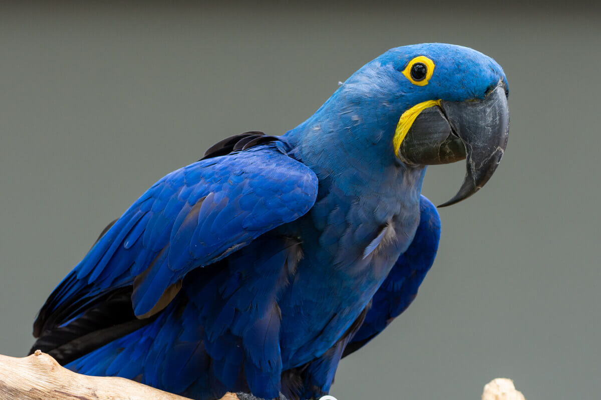
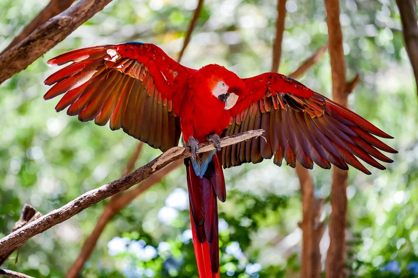

Missão
Resgatar e reabilitar animais silvestres vítimas do tráfico e combater esse crime com informação.

Todos os dias, animais silvestres são arrancados da natureza e vendidos como mercadoria. A Asas Livres existe para dar a eles uma segunda chance.

"Ela chegou numa caixa de papelão, assustada e sem forças para abrir as asas."
Aurora, uma filhote de arara-canindé, foi encontrada em uma apreensão na estrada. Estava desidratada e com as penas machucadas.
Hoje ela voa. E existem muitas outras Auroras esperando por ajuda. Com a sua doação, uma delas pode ter o mesmo final.
Fundada em 2015, a Asas Livres recebe animais apreendidos em rodovias, feiras e residências. Tratamos os feridos e preparamos cada um para voltar ao seu habitat.
Resgatar e reabilitar animais silvestres vítimas do tráfico e combater esse crime com informação.
Um Brasil em que nenhum animal silvestre seja tirado da natureza para virar mercadoria.
Respeito à vida, transparência, ciência e parceria com os órgãos ambientais.
Endereço: Estrada da Mata, 500 – Atibaia/SP
E-mail: contato@asaslivres.org.br
Telefone: (11) 4000-5678
Horário: segunda a sexta, das 8h às 17h
Viu um animal silvestre sendo vendido? Denuncie ao Ibama pela Linha Verde: 0800 061 8080.